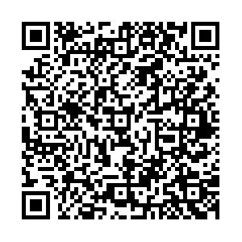

Apunta con el teléfono para abrir la misiónEn un aula de 43 alumnos con tres teléfonos, la misión no le llega a todos. Esta hoja lleva lo mismo en papel. Se fotocopia, se lleva a casa y funciona sin señal y sin luz.
En el recreo alguien le dijo a Yeimy que el examen de Matemáticas se había pasado para el jueves. Esa noche no estudió. El martes el examen estaba ahí. Sacó 40. Con esa nota se quedó fuera del cuadro de honor.
Separa creer, opinar y saber. Se llama Epistemología, y pregunta: ¿Cómo sé que sé?
Cada manera tiene su prueba. La prueba es una pregunta: se la haces a la idea y ella te contesta cuál de las tres es.
Lo doy por cierto, pero no puedo decir cómo lo sé.
La prueba: Preguntate: ¿puedo decir CÓMO lo sé?
Es un gusto o un juicio mío. Otro puede pensar lo contrario sin equivocarse.
La prueba: Preguntate: ¿puede otro pensar lo contrario sin estar equivocado?
Es así, y además puedo decir con qué se comprueba.
La prueba: Preguntate: ¿es así Y puedo decir con qué se comprueba?
Todo lo que sabés entró por algún lado. Son cinco puertas. Ninguna es mala, y ninguna basta sola: cada una hace algo bien y cada una falla en algo.
🛠 Se arregla con otro sentido o con una medida. Meté la mano y tocá el lápiz.
🛠 Se arregla escribiéndolo el mismo día, y preguntándole a otro que estuvo.
🛠 Se arregla preguntando cómo lo sabe, y buscando a quien lo vio.
🛠 Se arregla mirando de dónde parte, que es la unidad 2 de esta ruta.
🛠 Se arregla midiendo otra vez, con otra cinta y con otra persona.
No son trucos de magia: se hacen con lo que hay en una cocina. Hacelo, mirá lo que se ve y después leé lo que pasó de verdad.
Hacelo: Meté medio lápiz en un vaso con agua y miralo de lado.
Se ve: quebrado justo donde empieza el agua.
Lo que pasa: El lápiz está entero. Lo que cambia es cómo viaja la luz al salir del agua.
Se desarma: Meté la mano y tocalo: el tacto no se equivoca ahí.
Hacelo: Una mano en agua fría y otra en agua caliente, un rato. Después las dos al agua tibia.
Se ve: La misma agua tibia se siente caliente en una mano. Y fría en la otra.
Lo que pasa: La piel no mide grados: compara con lo que tenía antes.
Se desarma: con un termómetro, que da el mismo número para las dos.
Hacelo: Poné una moneda en el fondo de una taza. Alejate hasta que el borde te la tape.
Se ve: Sin moverte, alguien echa agua despacio y la moneda aparece.
Lo que pasa: La moneda no se movió. La luz se dobla al salir del agua y te llega.
Se desarma: mirando desde arriba: desde ahí siempre estuvo.
Hacelo: Pintá dos cuadritos iguales: uno rodeado de blanco y otro de negro.
Se ve: El de fondo negro se ve más claro. Y los dos salieron del mismo lápiz.
Lo que pasa: El ojo compara con lo que tiene al lado, no mide.
Se desarma: tapando los fondos con un papel: quedan iguales.
Sirven para cualquier cosa que alguien te diga. El quinto es el que más cuesta.
«Ese abono es mejor» no se comprueba. «Ese abono da más mazorcas por planta» sí.
Si lo vio, si lo midió, o si se lo contaron. Las tres valen distinto.
Lo que se cuenta o se mide lo puede revisar cualquiera. Ahí se acaba la discusión.
Si solo buscás lo que te da la razón, siempre vas a encontrarlo.
Si no hay nada que te haga cambiar, no estabas sabiendo. Estabas defendiendo.
Las dos tienen razón en algo y a las dos les falta algo. Mira en qué acierta cada una y en qué se queda corta.
Lo más seguro que sabemos lo saca la razón, pensando con orden.
Acierta: Que 2 + 2 son 4 no hace falta salir a comprobarlo en el patio.
Se queda corta: Pensando solo no averiguás cuántos alumnos hay hoy en tu aula.
Todo lo que sabemos entró alguna vez por los sentidos.
Acierta: De qué color es el techo de tu escuela no se deduce. Hay que mirarlo.
Se queda corta: Mirando solo no sacás que dos rectas paralelas no se juntan nunca.
| Palabra | Qué quiere decir |
|---|---|
| saber | Que algo sea así y que además puedas decir con qué se comprueba. |
| creer | Dar algo por cierto sin haberlo comprobado todavía. |
| opinión | Un juicio tuyo, donde otro puede pensar lo contrario sin equivocarse. |
| fuente | De dónde salió lo que decís. Quien lo vio, quien lo midió o quien lo contó. |
| hipótesis | Una respuesta que se propone ANTES de comprobarla, para poder comprobarla. |
| comprobar | Hacer algo que daría un resultado distinto si la afirmación fuera falsa. |
Uno empezó dudando de todo; el otro dijo que la mente arranca vacía. Aquí no hay ni una fecha, y no es un olvido: una fecha que no se puede acreditar no se escribe.
Francia
Decidió dudar de todo lo que pudiera dudarse. Quería ver qué quedaba en pie.
Qué hizo: Encontró una cosa de la que no podía dudar. Mientras dudaba, estaba pensando.
Por qué se le recuerda: Enseñó a empezar por lo seguro. Desde ahí se construye, en vez de dar cosas por dadas.
Dato: De él viene el racionalismo: primero la razón, y con orden.
Inglaterra
Dijo que la mente empieza vacía. Todo lo que hay dentro entró por los sentidos.
Qué hizo: Puso la experiencia en el centro. Sin mirar, oír y tocar no habría nada que pensar.
Por qué se le recuerda: Enseña que una idea que nunca tocó el mundo no se puede comprobar.
Dato: De él viene el empirismo, la otra escuela que esta unidad compara.
| Materia | Qué le deja |
|---|---|
| 🌱 Ciencias Naturales | Le dio el método: una hipótesis solo vale si hay forma de comprobarla. Pruébalo hoy: En tu cuaderno: escribí qué esperabas ANTES del experimento, no después. |
| 🌎 Ciencias Sociales | Le dio la pregunta por la fuente. Quién lo contó, cuándo y desde dónde. Pruébalo hoy: Buscá dos versiones de un mismo hecho y mirá en qué se separan. |
| ✍️ Español | Le dio una costumbre. Decir de dónde salió cada dato que se escribe. Pruébalo hoy: Anotá de dónde sacaste cada dato. Hacelo en tu próximo trabajo. |
Escribe S si se sabe y se puede comprobar, C si solo se cree, y O si es una opinión.
| S, C u O | La afirmación |
|---|---|
| Es más divertido jugar que leer | |
| Esta canción es fea | |
| El examen se pasó para el jueves | |
| Las baleadas son mejores que los tamales | |
| La puerta del aula mide más que yo | |
| El azul es el color más bonito | |
| Mañana va a llover | |
| La pila tiene agua hasta la mitad | |
| Esta piedra pesa más que aquella | |
| Esa semilla rinde más que la otra | |
| A ese río nunca se le seca el agua | |
| En mi cuaderno caben treinta renglones |
Une cada prueba con su manera. Escribe la letra en el paréntesis.
| ( ) | La pregunta que se le hace a la idea | La manera |
|---|---|---|
| Preguntate: ¿es así Y puedo decir con qué se comprueba? | a) 🤔 Lo creo | |
| Preguntate: ¿puedo decir CÓMO lo sé? | b) 💬 Es mi opinión | |
| Preguntate: ¿puede otro pensar lo contrario sin estar equivocado? | c) ✅ Lo sé |
Escribe algo que «sabés» porque alguien te lo contó. Después pásale los cinco pasos.
| El paso | Qué me sale a mí |
|---|---|
| 1. Decí exactamente qué se afirma. | |
| 2. Preguntá cómo lo sabe quien lo dice. | |
| 3. Mirá si se puede ver, contar o medir. | |
| 4. Buscá a quien diga lo contrario. | |
| 5. Decí qué te haría cambiar de idea. |
Completa cuándo falla cada fuente y cómo se arregla. La primera columna ya está.
| La fuente | Falla cuando… | Se arregla… |
|---|---|---|
| 👀 Los sentidos | ||
| 🧠 La memoria | ||
| 🗣️ Lo que otro cuenta | ||
| 🧮 El razonamiento | ||
| 📏 La medida |
Aquí no hay respuestas escritas, y no es un descuido. Estas se averiguan donde vivís, porque es ahí donde están.